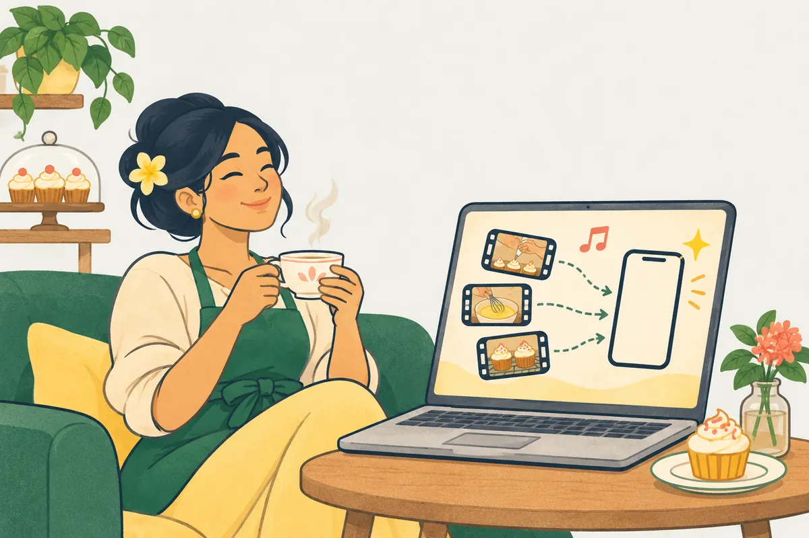

Perniagaan anda. Cerita anda. Laman web anda.
Perniagaan anda. Cerita anda. Laman web anda.PANDUAN UNTUK IDEA ANDA
TEROKAI. CUBA. CIPTA.Bayangkan.
Kemudian jadikannya nyata.
Laman web. Reels. Idea anda menjadi nyata.
Lihat apa yang boleh dibuat ↓DARI BEBERAPA AYAT
KE HASIL YANG NYATA.AURELION / PANDUAN KREATIF
KE HASIL YANG NYATA.AURELION / PANDUAN KREATIF
IDEA ANDA. DIBUAT DENGAN AI.
Satu prompt ringkas.
Satu dunia baru.
Ini contoh sebenar daripada panduan kami. Cuba sendiri.01 / FOLDER
02 / REEL PENUH
03 / PUTARAN
01 / PELBAGAI PILIHAN
Apa yang
anda mahu buat?03
Pilih idea. Bina langkah demi langkah.
Perniagaan anda. Cerita anda. Laman web anda.
Kurang menatap skrin. Lebih banyak mencipta.IDEA · PENCERITAAN · VIDEO · PERKONGSIAN
Idea seterusnya.
Dalam gerakan.
Jadikan idea anda reel yang boleh dikongsi.
03 / SEDIKIT KEAJAIBAN
Sekarang, biar
ia bergerak.
Kad berputar. Kedalaman. Gerakan.
Terokai kesan video ↗CONTOH ASAL / TEKAN MAIN
ALAT PALING BERGUNA TETAP ANDA.
Anda bawa idea.
AI bantu jadikannya nyata.
Mula kecil. Semak. Jadikannya milik anda.
Belajar beri maklum balas yang lebih jelas ↗02 / AYAT PERTAMA ANDA
Semuanya bermula
dengan "Saya nak."
Beritahu AI apa yang anda mahu buat dan untuk siapa.
Terokai panduan prompt ↗Bantu saya rancang laman web perniagaan yang ringkas. Tanya satu soalan pada satu masa tentang perniagaan, pelanggan dan tindakan yang pelawat perlu ambil.
IDEA IALAH PERMULAAN YANG BAIK.
Jom buatsesuatu.
Langkah kecil. Hasil nyata. Milik anda.Atau pilih panduan lain ↑